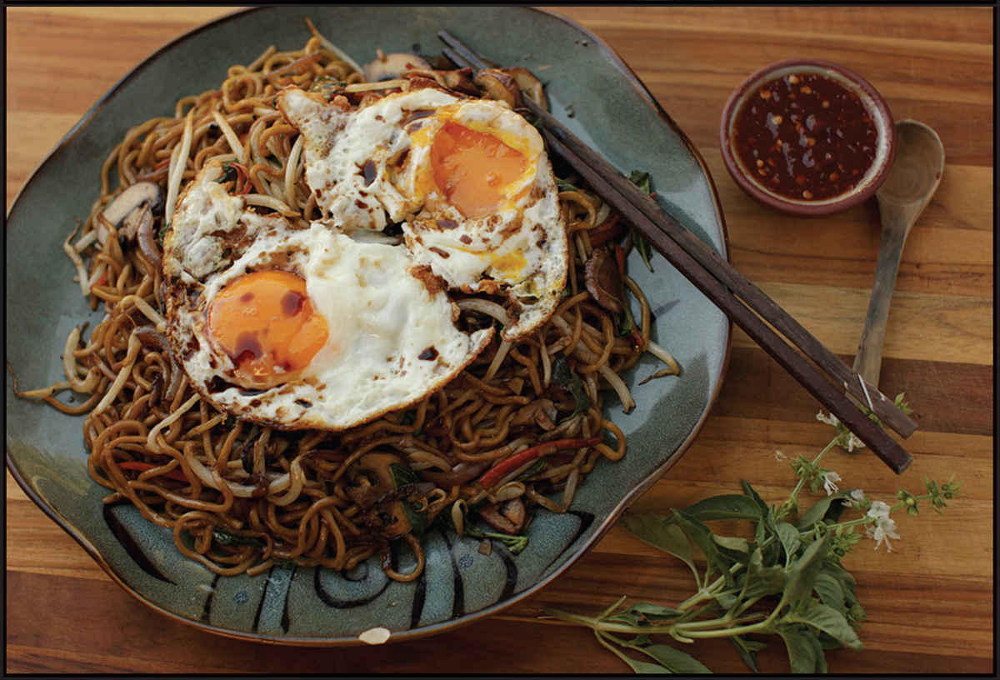

EASY STIR-FRIED NOODLES WITH MUSHROOMS, CARROTS, BASIL, AND SWEET SOY SAUCE

|
Yield Serves 4 |
Active Time 30 minutes Total Time 30 minutes |
Some lo mein are sold preboiled. Fresh lo mein should have a floury appearance, whereas precooked lo mein will appear shiny due to the oil added to keep the noodles from sticking. If your noodles are precooked, boil them for only 10 to 15 seconds in step 1 before draining. Kecap manis is a sweet Indonesian soy sauce. You can find it at Asian markets or make a similar condiment yourself following the recipe on here. Sambal oelek is an Indonesian-style salted chile paste. You can use any fresh or fermented hot chile paste in its place, such as sriracha.
This streamlined, simple vegetarian lo mein dish gets a big boost of flavor from sweet, aromatic Indonesian kecap manis and bright and spicy sambal oelek chile paste. It resembles mie goreng—Indonesian-style stir-fried noodles—but where mie goreng typically contains meat, eggs, cabbage, and tomato (or ketchup!), for this one I went with a mix of mushrooms and carrots (two vegetables my daughter can’t get enough of), along with big handfuls of mung bean sprouts and basil added right at the end to preserve its bright perfume. Served with a Really Fried Egg on top, it’s a dish that’s equally at home on a weeknight dinner menu or a lazy weekend breakfast.
If you’d like to stick with more traditional mie goreng ingredients, start the recipe by stir-frying a few ounces of simply marinated chicken (use the Basic Stir-Fry Marinade for Any Meat on here) or brined shrimp (use the Brined Shrimp for Stir-Fries recipe on here) until almost cooked through, removing it from the wok, then proceeding with the recipe as directed, replacing the mushrooms with shredded cabbage and omitting the basil.
INGREDIENTS
For the Noodles:
Kosher salt
1 pound (450 g) fresh lo mein noodles (see Notes)
A little peanut, rice bran, or other neutral oil
For the Sauce:
1 teaspoon (5 ml) roasted sesame oil
1 teaspoon (5 ml) dark soy sauce
1 tablespoon (15 ml) light soy sauce
1½ tablespoons (22 ml) kecap manis (see Notes)
1 tablespoon (15 ml) sambal oelek or other chile sauce (see Notes)
1 teaspoon (4 g) sugar
For the Stir-Fry:
3 tablespoons (90 ml) peanut, rice bran, or other neutral oil
6 ounces (170 g) cremini or button mushrooms or shiitake mushroom caps, thinly sliced
4 ounces (170 g) carrot, peeled and cut into fine matchsticks (about ½ medium)
1 medium shallot (about 1½ ounces/45 g), thinly sliced
2 scallions, thinly sliced
2 teaspoons (5 g) minced garlic (about 2 medium cloves)
3 ounces (120 g/about 1 cup) mung bean sprouts
1 ounce (30 g/about 1 packed cup) fresh Thai or Italian basil leaves
Kosher salt and freshly ground white pepper
To Serve:
4 Extra-Crispy Fried Eggs (here)
Sambal oelek
DIRECTIONS
1 Bring 3 quarts (3 l) of salted water to a boil in your wok and cook the noodles, stirring regularly with tongs or long chopsticks, until not quite al dente and separated, about 1 minute (see Notes). Drain through a fine-mesh strainer over the sink, add a drizzle of oil, toss with chopsticks to coat in the oil, then transfer the noodles to a rimmed baking sheet and spread them out in an even layer.
2 For the Sauce: Combine the sesame oil, soy sauces, kecap manis, sambal oelek, and sugar in a small bowl and stir until the sugar is dissolved.
3 For the Stir-Fry: Heat the wok over high heat until lightly smoking. Add 2 tablespoons (30 ml) of the oil and swirl to coat. Add the mushrooms and cook, stirring regularly, until deeply browned, about 2 minutes. Add the carrots, shallots, scallions, and garlic and stir-fry until the carrots and shallots are tender, about 1 minute.
4 Add the remaining tablespoon (15 ml) oil, then immediately add the noodles and cook, tossing and stirring, until hot. Add the bean sprouts and basil leaves. Stir the sauce and add it to the wok by pouring it around the edges. Toss everything and stir-fry until the sauce coats the noodles, about 1 minute. Season to taste with salt and white pepper. Transfer to a serving platter and serve immediately, topped with the fried eggs and with a side of chile sauce.